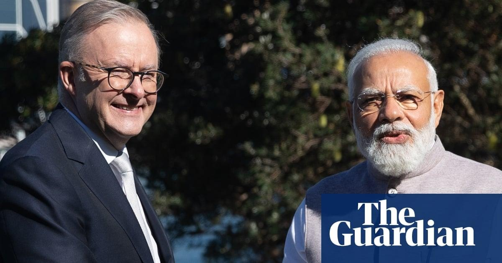

Narendra Modi assured by Anthony Albanese of ‘strict actions’ against any anti-Hindu crimes in AustraliaIndia’s prime minister, Narendra Modi, says his Australian counterpart, Anthony Albanese, has assured him authorities will take “strict actions” against anyone attacking Hindu temples in Australia. Modi made the comments after talks with the Australian prime minister in Sydney on Wednesday, prompting fresh promises to expand trade ties between the two countries and work together on developing a green hydrogen industry. Addressing reporters after the meeting, Modi said the leaders had once again “discussed the issue of attacks on temples in Australia and activities of separatist elements”. “We will not accept any elements that harm the friendly and warm ties between India and Australia by their actions or thoughts,” Modi said. “I thank the prime minister for the actions that have already been taken. Prime minister Albanese has once again assured me today that he will take strict actions against such elements in the future also.” Police promised in January to investigate an incident in which the walls of a Swaminarayan temple in Melbourne were painted with “Hindustan Murdabad” or “down with India”. There have also been reports that at least two other temples in Melbourne had been targeted. The north Indian state of Punjab was hit by violence for a decade from the mid-1980s as armed separatist groups sought to create a Sikh state called Khalistan. In recent months pro-Khalistan activists have organised non-binding referendums among diaspora communities in Canada and Australia. India’s high commission raised concerns in January that pro-Khalistan elements were becoming increasingly active in Australia. Modi and Albanese did not elaborate on the issue on Wednesday, because no questions were taken at the media conference in Sydney. But Guardian Australia understands Albanese indicated he was deeply disappointed by vandalism at temples and that police and security agencies were taking action over such incidents. At the same time, the Australian government has indicated that it respects the right of individuals to engage in peaceful protest. On other issues, Albanese and Modi finalised plans for a new taskforce on green hydrogen and said they would also strengthen their cooperation in the mining and critical minerals sectors. Albanese said this would help reduce global greenhouse gas emissions. Albanese announced the establishment of the new Australian consulate general in Bengaluru, while Modi announced plans to set up an Indian consulate general in Brisbane. The two leaders also finalised an Australia-India migration and mobility partnership arrangement. The Australian government said this would “promote the two-way mobility of students, graduates, academic researchers and business people, while also enhancing cooperation to prevent irregular migration and people smuggling”. While an interim trade agreement is already in force, the leaders expressed hopes for a more comprehensive deal by the end of the year. Both leaders described the deepening relationship as also being important for regional stability. “In the language of cricket, our ties have entered the T20 mode,” Modi said. Modi noted that India, Australia, Japan and the US had discussed Indo-Pacific issues at the rescheduled Quad summit in Hiroshima last weekend. “Friends, the scope of India-Australia ties is not limited to merely our two countries,” Modi said. “It is also linked to regional stability, peace and global welfare.” Albanese, who was originally due to host the Quad summit in Sydney on Wednesday before Joe Biden cut short his trip to the region, said he was “pleased to meet prime minister Modi so soon after our productive meeting in Hiroshima”. “Quad leaders stand together for an open, stable, secure and prosperous Indo-Pacific region – a region where sovereignty is respected and all countries, large and small, benefit from a regional balance that keeps the peace,” Albanese said. Human Rights Watch had called on Albanese to use the meeting to raise concerns with Modi about human rights in India, including the increased pressure on civil society and shrinking space for free speech. The organisation’s Asia director, Elaine Pearson, said: “The Australian government should not repeat the same mistakes it made with the Chinese government by pursuing deeper trade engagement while sidelining human rights concerns.” It is unclear whether Albanese raised the topic in Wednesday’s meeting, but a source said Australia engaged with India on human rights issues regularly. |
 |